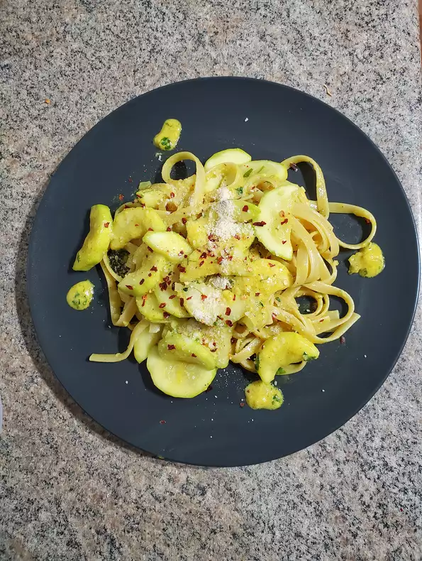

Zucchini Pasta Recipe
Pasta with zucchini in a garlicky sauce. Serve with crusty bread and a chilled white wine, if desired.
by ELLENC

Ingredients
- 1 pd rotini pasta
- 5 small zucchini, sliced
- 1/3 cup olive oil
- 4 cloves garlic, minced
- 1 pinch crushed red pepper flakes
- 1/3 cup chopped fresh parsley
- Salt and pepper to taste
- 1/2 cup grated Parmesan cheese
Directions
-
Bring a large pot of lightly salted water to a boil. Add pasta and cook for 8 to 10 minutes or until al dente. Drain and reserve
-
Fill a medium sauce pan with lightly salted water. Add zucchini and bring to a boil for 10 minutes or until tender.
-
In a large skillet, saute garlic in oil and hot pepper flakes. Add drained zucchini and parsley, then mix all together and simmer for 5 to 10 minutes. Toss with pasta, then add cheese and salt and pepper to taste. Serve